Latest Blog
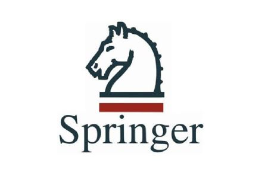
📝 Paper JINT
Excited to share that our paper introducing the SMapper device has been published in the Journal of Intelligent & Robotic Systems!
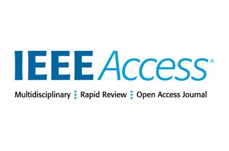
📝 Paper IEEE Access
Happy to share that our paper on LLM-based Robot Control has been accepted for publication in the IEEE Access journal!
🖋️ Article on Medium
Check out my new personal article, Boost Your Research Visibility: Preprints Before Submissions, now live! Read it on Medium.
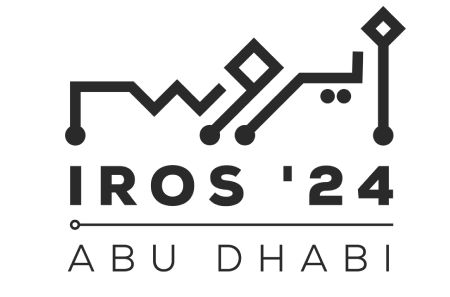
📝 Paper IROS'24
Happy to share that our paper has been accepted in 14th Workshop on Planning, Perception and Navigation for Intelligent Vehicles in IROS'24!
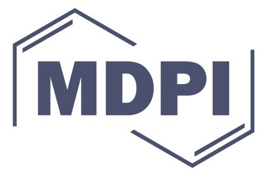
📝 Paper MDPI Robotics
Excited to share that our paper on marker-based Visual SLAM has been accepted for publication in the MDPI Robotics journal!
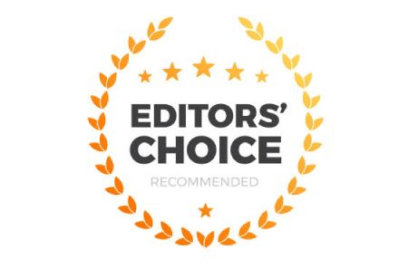
🏆 Editor's Choice Paper
Thrilled to share that our paper with 100+ citations has been selected as an Editor's Choice Article in MDPI Sensors journal!
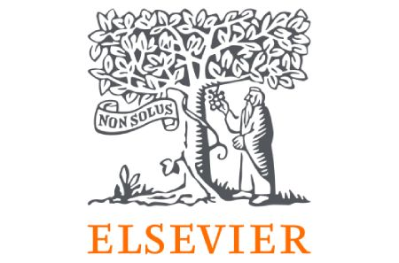
📝 Paper Elsevier IVC
Delighted to announce that our survey paper on pedestrian detection has been accepted in Elsevier's Image and Vision Computing journal!
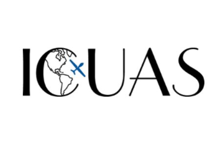
📝 Paper ICUAS'24
Happy to share that our paper has been accepted for presentation in the ICUAS'24 conference! See you in Chania, Greece!
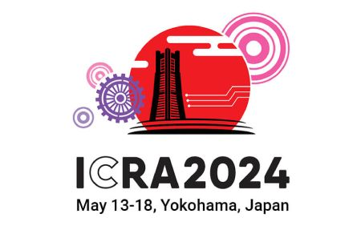
📝 Paper ICRA'24
Excited to announce that we will present our Late Breaking Results on the ongoing vS-Graphs project at the ICRA'24 conference!
💯 Academic Milestone!
Happy to say that my author-level metric (h-index) reached level 10 with 250+ citations on my Google Scholar profile, reflecting my works' impact.
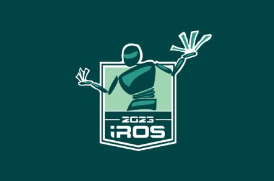
📝 Paper IROS'23
Proud to annouce that our paper has been accepted in the IROS'23 Conference, a highly prestigious event in robotics.
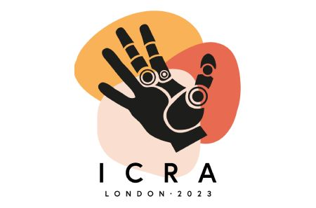
📝 Paper ICRA'23 Workshop
Happy to annouce that our paper has been accepted in the workshop of Active Methods in Autonomous Navigation in ICRA'23, London.
📝 Paper MDPI Sensors
Check out our recent survey on the concept of Situational Awareness, which got accepted in the Sensors journal.
📝 Paper MDPI Sensors
Excited to share the acceptance of my first survey manuscript in the Sensors journal, where we explore the trends and directions of Visual SLAM.
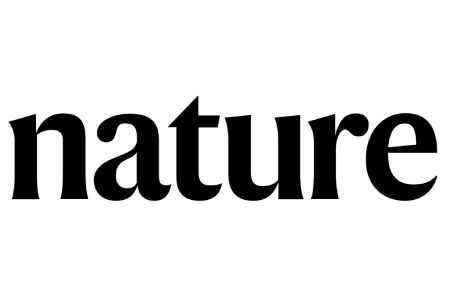
📝 Paper LSA Nature
Proud to announce that our paper has been accepted in Light: Science & Applications as part of an exciting interdisciplinary project.
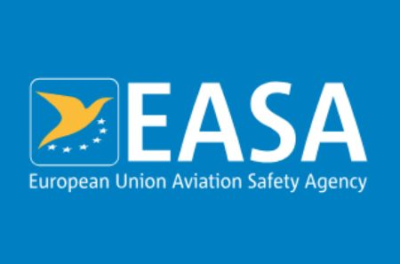
✈️ Drone Pilot Certification
Happy to share that I have earned my Open Category UAS Pilot Certificate (A1/A3) from the Luxembourg Direction de l'Aviation Civile!
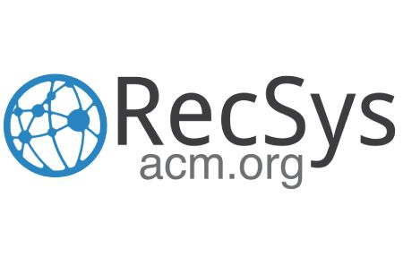
📝 Paper RecSys'22
Thrilled to announce that our paper has been accepted to @ACMRecSys'22, a top-tier conference in the field of Recommender Systems.
💯 Academic Milestone!
Excited to share that my publications have reached 100 citations on Google Scholar! So grateful to my collaborators and mentors for their support.
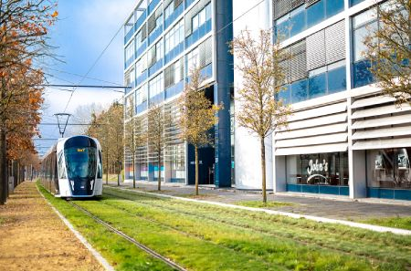
🎓 PhD Journey Started!
Thrilled to announce the start of my journey as a Doctoral Researcher with the Automation and Robotics Group of SnT, University of Luxembourg!